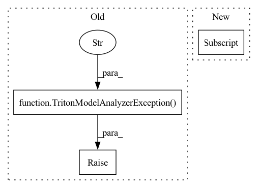

Pattern ID :31324
Before Change
f"increased to {self._config["measurement-interval"]} ms."
)
else:
raise TritonModelAnalyzerException(
f"Running perf_analyzer with {e.cmd} failed with"
f" exit status {e.returncode} : {e.output}" )
raise TritonModelAnalyzerException(
f"Ran perf_analyzer {MAX_INTERVAL_CHANGES} times, "
"but no valid requests recorded in max time interval"After Change
process_util = psutil.Process(process.pid)
// Convert to miliseconds
interval_sleep_time = self._config["measurement-interval"] // 1000
while current_timeout > 0:
if process.poll() is not None:
self._output = process.stdout.read()In pattern: SUPERPATTERN
Frequency: 3
Non-data size: 3
Instances Fragment ID: 91898920
Project Name: triton-inference-server/model_analyzer
Commit Name: ee6f71044943c0f52500e6993d5f6f5921216bb8
Time: 2021-03-10
Author: itabrizian@nvidia.com
File Name: model_analyzer/perf_analyzer/perf_analyzer.py
M Class Name: PerfAnalyzer
N Class Name: PerfAnalyzer
M Method Name: run(2)
N Method Name: run(2)
M Parent Class:
N Parent Class:
M File Name: model_analyzer/perf_analyzer/perf_analyzer.py
N File Name: model_analyzer/perf_analyzer/perf_analyzer.py
M Start Line: 78
M End Line: 104
N Start Line: 87
N End Line: 151
Before Change
args.export_path = None
else:
if args.export_path and not os.path.isdir(args.export_path):
raise TritonModelAnalyzerException(
f"Export path {args.export_path} is not a directory" )
if not (args.filename_model and args.filename_server_only):
raise TritonModelAnalyzerException(
"--filename-model and --filename-server-only must be specified"
)After Change
// Remove the first argument which is the program name
args = self._parser.parse_args(sys.argv[1:] )
self._preprocess_and_verify_arguments(args)
return args
Fragment ID: 91898918
Project Name: triton-inference-server/model_analyzer
Commit Name: 4378a684a7452cb9b0c3c69a90eaf49e2457c1ac
Time: 2020-11-24
Author: xprotobeast2@gmail.com
File Name: model_analyzer/cli/cli.py
M Class Name: CLI
N Class Name: CLI
M Method Name: parse(1)
N Method Name: parse(1)
M Parent Class:
N Parent Class:
M File Name: model_analyzer/cli/cli.py
N File Name: model_analyzer/cli/cli.py
M Start Line: 144
M End Line: 159
N Start Line: 218
N End Line: 219
Before Change
fields.append(dcgm_field)
else:
dcgm_agent.dcgmShutdown()
raise TritonModelAnalyzerException(
f"{tag} is not supported by Model Analyzer DCGM Monitor" )
self.dcgm_field_group_id = dcgm_agent.dcgmFieldGroupCreate(
dcgm_handle, fields, "triton-monitor")
After Change
fields = []
try:
for metric in metrics:
fields.append(self.model_analyzer_to_dcgm_field[metric] )
except KeyError:
dcgm_agent.dcgmShutdown()
raise TritonModelAnalyzerException( Fragment ID: 91898917
Project Name: triton-inference-server/model_analyzer
Commit Name: dc13b0bee57fca4320fd9188e0bc0538c7afa5cf
Time: 2021-01-20
Author: asramesh@nvidia.com
File Name: model_analyzer/monitor/dcgm/dcgm_monitor.py
M Class Name: DCGMMonitor
N Class Name: DCGMMonitor
M Method Name: __init__(5)
N Method Name: __init__(5)
M Parent Class: GPUMonitor
N Parent Class: Monitor
M File Name: model_analyzer/monitor/dcgm/dcgm_monitor.py
N File Name: model_analyzer/monitor/dcgm/dcgm_monitor.py
M Start Line: 74
M End Line: 83
N Start Line: 74
N End Line: 82